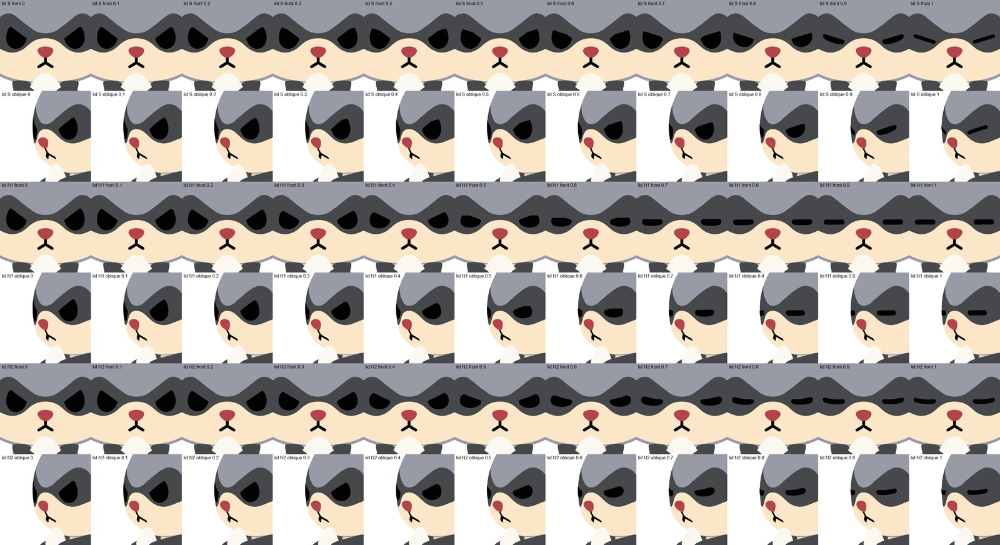
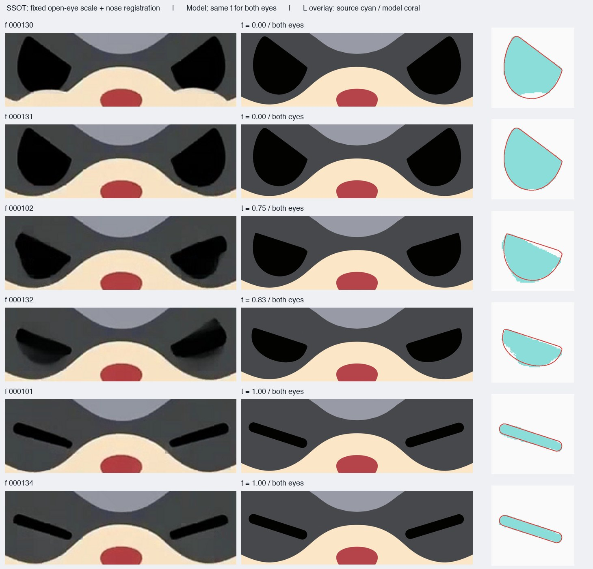
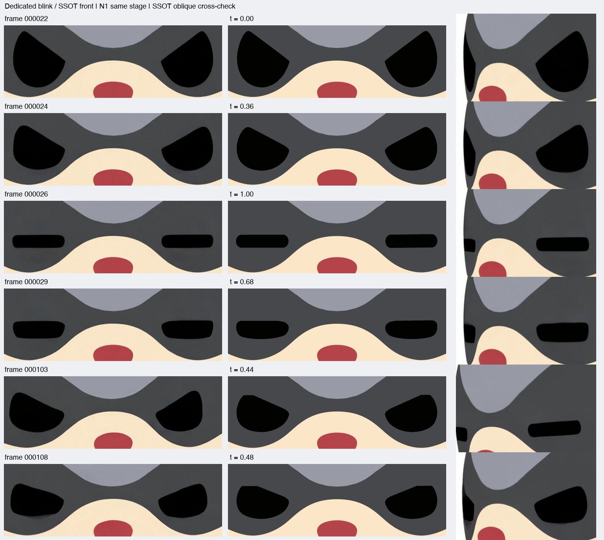
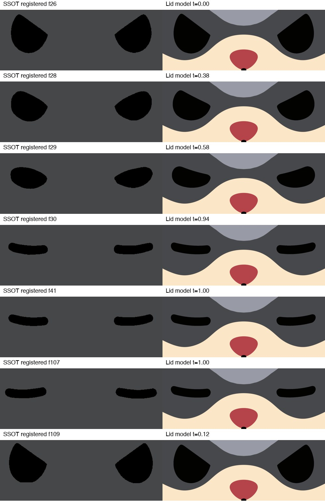

2026-09-30。実機（Blender）で食事1回分（近づく → かじる → 噛む）を撮影。30fps、正面と斜め。まばたきは約0.1秒と速いので、スロー再生で見てください。

上から：元動画どおり（食事の元動画）／「2回まばたき」から／「味わって閉じる」から
食事の元動画（左）→ こちら（右）

「2回まばたき」元動画 → こちら

「味わって閉じる」元動画 → こちら

① 2回まばたき（実際は素早いまばたきが3回）
② 味わって閉じる（ゆっくり閉じて約2.5秒閉じたまま。顔も少し動く）
③ まばたき→味わう